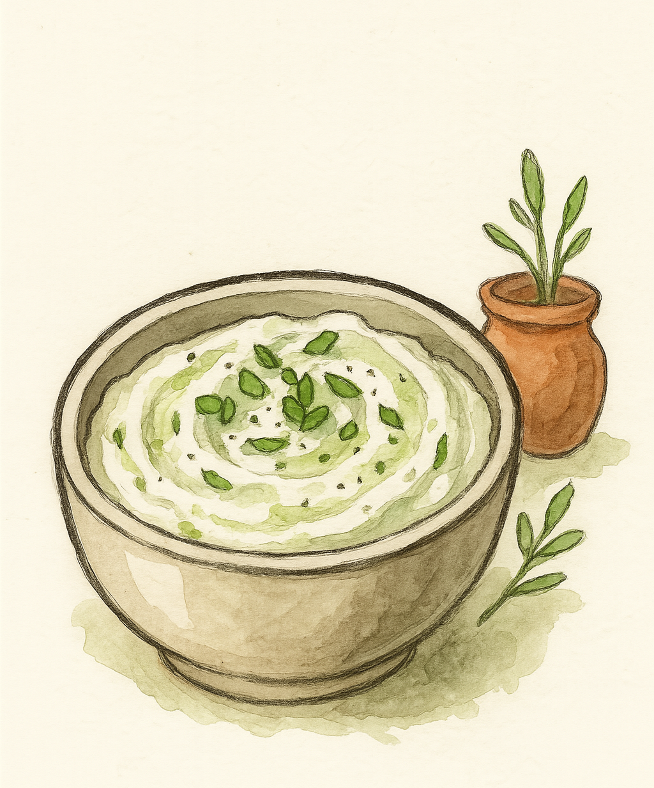

Whipped Feta Dip

Description:
Creamy and bold with salty tang, this whipped feta is blended smooth and brightened with garlic, chives, and oregano. Serve as a dip, spread, or side to grilled meats or bread.
Ingredients (Serves 4+ as a dip):
- 200g feta cheese
- 2 tbsp Greek yogurt or sour cream
- 1 tbsp olive oil
- 1 small garlic clove, finely grated
- 1 tbsp chopped fresh chives
- ½ tsp chopped fresh oregano (or pinch dried)
- Optional: chili flakes or honey for topping
Steps
- Blend Base: In a food processor, blend feta, yogurt, olive oil, and garlic until smooth.
- Fold in Herbs: Stir in chives and oregano. Adjust texture with a bit more oil if needed.
- Serve: Chill until serving. Top with a swirl of olive oil, chili flakes, or a little honey.
Home